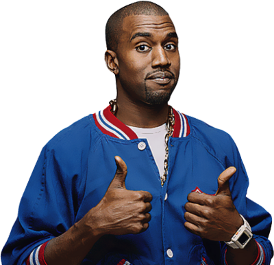

How this works?
This website allows you to generate random Kanye West tweets. It also lets you play with the Kanye West simulator to create, edit, or delete tweets made by him.
Upon clicking the button, one of his tweets will be selected from a list of tweets retrieved via an API and will be displayed in the text box below the button.
The API is called kanye.rest, a free REST API for random Kanye West quotes (Kanye as a Service) and was created by @andrewjazbec.
